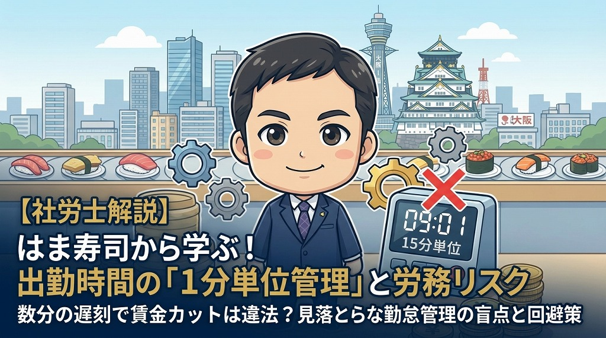

『出勤』時間の「1分単位管理」と労務リスクの回避策

大手回転寿司チェーン「はま寿司」が、労働基準監督署から是正勧告を受けました。アルバイトの出勤打刻を15分単位で管理し、数分の遅刻で労働時間をカットしていたことが原因です。
大阪でサービス業の支援を行うアセント社労士事務所が、この事例を教訓に、見落としがちな「出勤打刻の1分単位管理」の重要性と、企業が取り組むべき注意点を詳しく解説します。
1. はま寿司への是正勧告：事件の概要と背景
今回の是正勧告は、はま寿司で働くアルバイト従業員からの訴えにより、労働基準監督署が動いたことで明らかになりました。
報道によると、同社では出勤の打刻時間を15分刻みで設定していました。そのため、数分の遅刻が発生した際、本来の労働時間の一部が切り捨てられていたのです。はま寿司側はこの事実を認め、過去に遡って未払い賃金を支払う方針を示しました。
この事件は、単なる一企業の不祥事ではなく、多くの企業が抱える「勤怠管理の盲点」を浮き彫りにしました。
2. なぜ「退勤」ではなく「出勤」の打刻が問題なのか
今回の是正勧告において、最も注目すべき点は「出勤時の打刻」が焦点となっていることです。
多くの企業では、残業代の計算に関わるため、退勤時間は1分単位で管理する意識が定着しています。しかし、出勤時間については、以下のような理由から「15分単位」などの端数処理を行っているケースが散見されます。
- 始業時間（例：午前9時）に合わせてキリよく管理したい。
- 数分の遅刻に対して、事務処理の簡便化を優先したい。
- 早めに出勤して打刻する従業員の時間を、労働時間としてカウントしたくない。
特にサービス業では、シフト制で出勤時間が細かくなりがちです。しかし、出勤時間だけを15分単位にすることは、労働基準法上の「賃金全額払いの原則」に抵触するリスクを孕んでいます。
3. 出勤前の10分間は「休憩」か「労働」か
たとえば、始業時間が9時00分の職場において、従業員が8時50分に打刻したケースを考えてみましょう。この「始業前の10分間」の扱いに、多くの労務リスクが潜んでいます。
■ 労働時間とみなされるケース
始業時間前に以下のような行動を義務付けている、あるいは黙認している場合は、労働時間として1分単位で賃金を支払う必要があります。
- 制服への着替え
- 店舗やオフィスの掃除
- PCの起動やメールチェック
- 朝礼やミーティングへの参加
- 当日の作業準備
補足：「9時00分からすぐに働ける状態にしておくこと」という指示がある場合、その準備時間は指揮命令下にあるとみなされ、労働時間として判断される可能性が極めて高くなります。
■ 休憩時間（自由利用）とみなされるケース
一方で、8時50分に打刻しても、9時00分までは完全に自由な時間であり、一切の業務が禁止されている（スマホを見ていても良いなど）のであれば、労働時間には含まれないと言えます。しかし、実態として何らかの作業を行っている場合は、是正勧告の対象となる可能性が高いと言えます。
4. 1分単位の勤怠管理を運用に落とし込むための課題
労働時間は1分単位で計算することが大原則です。しかし、物理的な制約が運用の壁になることもあります。
例えば、大人数の従業員が同じ始業時間に設定されている場合、タイムレコーダーの前に列ができ、全員がジャストに打刻することは不可能です。そのため、多くの企業では「始業の数分前に打刻し、始業を待つ」という運用が行われています。
はま寿司の事例では、システム上の設定が「出勤は15分単位まで切り捨てる」というロジックになっていたと考えられます。9時1分に打刻した際、勤務開始を9時15分として扱うような処理が労働基準法違反と扱われました。
今後の労務管理においては、以下の2点を徹底する必要があります。
- 打刻ロジックの修正：
遅刻した場合でも、打刻した瞬間から労働時間としてカウントする設定に変更する。 - 早出管理のルール化：
勝手な早出残業を防ぐため、始業前の打刻と労働開始の境界線を明確にする。例えば、「始業時間の〇分前までは打刻しない」などのルール徹底が必要です。
5. 今すぐ確認すべきチェックリスト
アセント社労士事務所では、特に大阪を中心としたサービス業の経営者様に、ご自身の店舗や会社の仕組みとして以下のチェックを推奨します。
-
勤怠システムの再確認：
出勤・退勤ともに、切り捨て処理（丸め処理）が行われていないか。 -
着替え時間の扱い：
制服に着替える場所や時間を指定している場合、その時間を労働時間に含めているか。 -
準備・清掃・朝礼：
これらが始業時間前に行われていないか、あるいは正しく賃金が支払われているか。 -
遅刻時の控除ルール：
1分の遅刻に対して、15分や30分単位で賃金をカットしていないか。
一度是正勧告を受けると、過去に遡った賃金支払い（現在は最大3年分）だけでなく、企業の社会的信用にも影響を及ぼします。特に昨今は、SNSや掲示板を通じて従業員が声を上げやすい環境にあります。また、再計算など事務担当者の負担も甚大なものとなります。
まとめ：働き方のアップデートに向けて
今回の事件は、改めて「労働時間の定義」を問い直す機会となりました。
- 労働時間は、原則として1分単位で管理・計算しなければならない。
- 出勤時の15分単位などの切り捨ては、法的に認められない。
- 始業前の準備（着替え、掃除、朝礼）は、労働時間に含まれる可能性が高い。
- デジタル化が進む中、システムの設定ミスが巨額の未払い賃金リスクに直結する。
💡 取れる対策のヒント：
システム上、早出を原則禁止し許可制にする設定を導入することで、不要な早出残業を防ぐことが可能です。
出勤時間の管理を見直すことは、従業員の不満解消だけでなく、企業を守るための防衛策でもあります。自社の運用に少しでも不安がある場合は、早急に専門家へ相談し、適切な労務管理体制を整えてください。
大阪でサービス業を展開されている企業の皆様へ
働き方のアップデートを共に進めていきませんか。勤怠管理システムの導入・見直し支援から、就業規則の改定まで、アセント社労士事務所がサポートいたします。
無料相談（60分）に申し込む